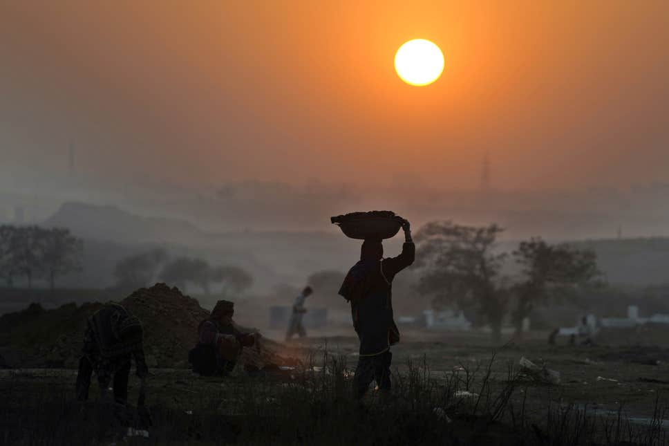

The Current Effects of Climate Change: Is it a real risk for human beings?
Climate change is one of our biggest issues and concerns about our current life on earth. Are we going to die? Are we going to suffer because of all the negative consequences climate change is bringing? Have we arrived at an alarming stage of crisis? It is very complicated to define or to predict the possible events in the future of our planet, but what we're sure of, is that if people do nothing to improve or change the current situation, it can be lethal to the current and the coming generations.

We are at a point where many people do not know what climate change really amounts to. According to National Destination, climate change is a long-term shift in global or regional climate patterns. Often, climate change refers specifically to the rise in global temperatures from the mid 20th century to present. All these changes can cause the extinction of the human species. We may be in the beginning stages of mass extinction, but we will not die tomorrow. The effects of climate change are constently increasing. As time goes on, the deeper we sink into the climate change problem, without trying to solve any of them.
Can we consider it as the beginning of a future mass extinction if it continues to grow? Certainly.
Nowadays, we are at a stage where we clearly feel the effects of climate change. It has physical consequences, and also affects our behavior as a species.
What are the consequences of climate change on humans?
Before being interested by the consequences of climate change, it is better to understand the causes. (see the diagram below)

As we can see, the main cause of climate change is global warming (to be brief it is the rising temperatures ), and it has direct impacts on humans health.
We can notice the emergence of a large-scale environmental hazard to human health such as:
- extreme weather
- ozone depletion
- increased danger of wildland fires
- loss of biodiversity
- stresses to food-producing system
- global spread of inflections and diseases
All these causes can be detrimental, and directly affect the human race. The impacts that we see now include:
- Impact of excess heat on the human body We are all different and we all react differently in the midst of heat waves. With an increasing amount of heat waves each year, the temperature of the air around us also rises and this has bad effects on humans. Pregnant women, old people, or even people with health issues or weak conditions are more susceptible to dehydration, fainting spells, and even death. They are less able to regulate their body temperature. They can therefore be more vulnerable to extreme heat. Climatic changes are estimated to cause over 150,000 deaths per year.
- Impact on the human's fertility rate
- Impact of diseases
- Impacts on human nutrition Heat waves also have an impact on the agricultural field. Because of heat waves, there is a higher concentration of CO2 in the atmosphere, which affects food safety. Extreme weather conditions can disrupt or slow down the distribution of food. Also, if there is not enough rain, agriculture can become too difficult ( for fruits, vegetables etc... because the ground would be too dry ), as well as farming ( for meat, animals may die too quickly, or theh may not want to procreate either ). Then it would be difficult for the human species to find nutrition.
- Impact on living places
- Impact on mental health Mental illnesses are a very important, very precious issue that we have to take care of. When mental health is threatened, for any reason, it can be disastrous. Facing horrible or bad weather conditions can cause stress and other mental issues on people. For exemple, you can lose your home or, most importantly, a person you love or a member of your family. People can become more vulnerable, sensible, and have less adaptive capacities. And even more...
Also, due to heat waves, people are less inclined to procreate thus affecting the fertility rate. Moreover, many people don't necessarily want their children to live in a “dying world”, where people don't care about beautiful Mother Earth. It's a tragic point of view we have to change immediatly.
Global warming also impacts the air quality. It is one of the most important points regarding human health. The rise of air temperatures, and the decline of its quality is obvious during heat waves. A lot of pollution issues arrive in such cases. It affects the air we breathe both indoor and outdoor and can lead asthma attacks, as well as cardiovascular, respiratory, and cerebrovascular diseases. So the more we evolve in a world where the air quality or the health quality is bad, the more we are able to have a lot of “long-term” or uncurable diseases, which is a bigger problem for future generations, as well as for the future of our planet.

A lot of people are migrating for climate reasons and natural catastrophes are part of it. Hurricanes, wildfires, flooding, etc. can destroy buildings and houses, thus leading people to move to safer places. Climate change has created the existence of “climate refugees”, and the number of refugees is estimated to grow to 1 billion by 2050.
(...)
In the last 500 million years, life has had to recover from five catastrophic blows, and now humans are potentially at risk of being at the center of a possible 6th mass extinction. Though mass extinctions are deadly events, they open up the planet for new forms of life to emerge. Our planet is reacting like a human body facing a virus. When the body is contaminated by bacteria, it increases its’ temperature in order to get rid of the virus and be cured. This is what the earth is trying to do: it increases its temperature to get rid of this “human virus” and start over from zero, healthy once again.
Do you still not care about climate change?